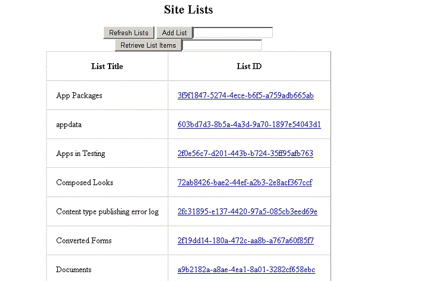
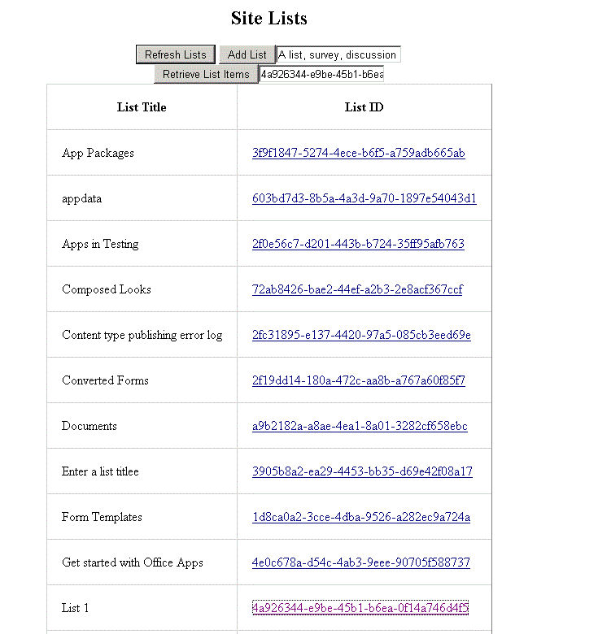
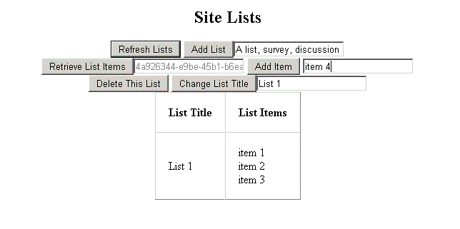

The sample demonstrates how to read and write list and list item data by using objects and methods in the SharePoint 2013 client object model (CSOM). Additionally, it demonstrates how to obtain the context and access tokens that are necessary for reading and writing data in a provider-hosted app for SharePoint.
The code that uses the CSOM is located in the Home.aspx.cs file of the BasicDataOperationsWeb project. The following screen shot shows how the Home.aspx page of the app appears after you install and launch the app.
Figure 1. Home.aspx page in the app, which displays the controls for viewing and adding lists to and from the parent web

This sample requires the following:
The basic data operations sample app contains the following:
To configure the perform basic data operations by using CSOM sample app, update the SiteUrl property of the solution with the URL of the home page of your SharePoint 2013 site.
Press the F5 key to build and deploy the app.
The following figure shows an example of how to use this app for SharePoint to view list items.
Figure 2. View list items from a list on the parent web

The following figure shows an example of how to use this app for SharePoint to add list items.
Figure 3. Add list items to a list on the parent web

The following table lists common configuration and environment errors that prevent the sample from running or deploying properly and how to solve them.
| Problem | Solution |
|---|---|
| Visual Studio does not open the browser after you press the F5 key. | Set the app for SharePoint project as the startup project. |
| HTTP error 405 Method not allowed. | Locate the applicationhost.config file in %userprofile%\Documents\IISExpress\config.
Locate the handler entry for StaticFile, and add the verbs GET, HEAD, POST, DEBUG, and TRACE. |
First version: July 16, 2012